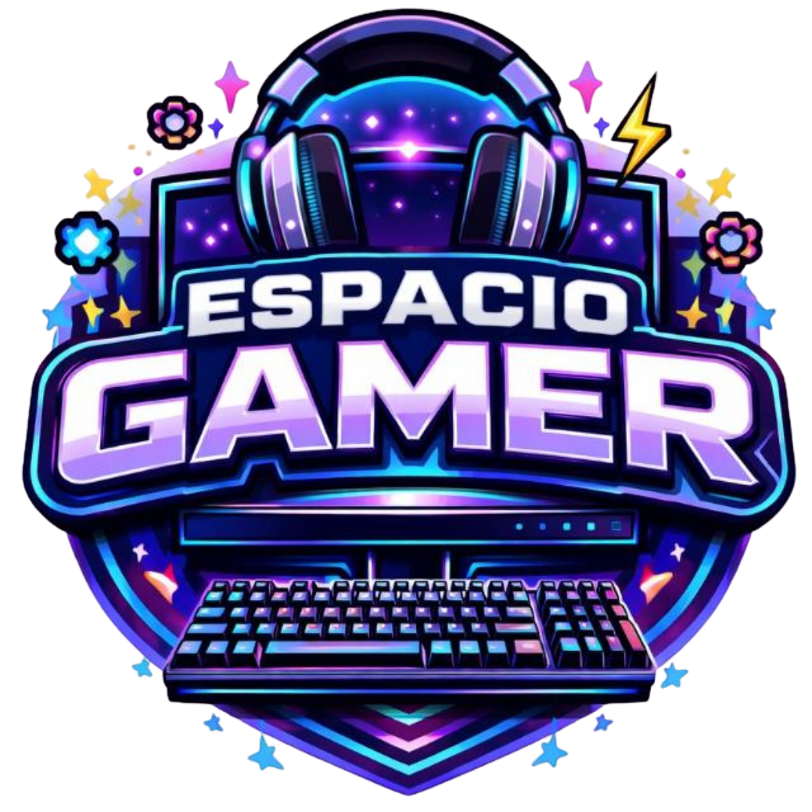
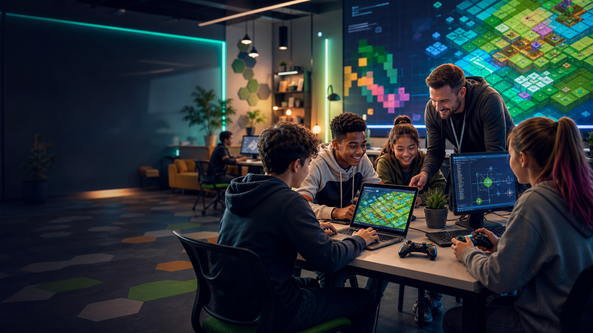

Pensamiento lógico
Secuencias, reglas y estrategias para entender cómo avanzar paso a paso.


Taller educativo en General Lagos
Aprender informática jugando, resolviendo desafíos y trabajando en equipo. Una propuesta guiada para convertir los videojuegos en una experiencia de aprendizaje real.
Sobre nosotros
El Espacio Gamer de General Lagos es un taller donde niños y adolescentes se acercan a la informática mediante juegos seleccionados, retos interactivos y actividades acompañadas por una mirada educativa.
No se trata de jugar por jugar. Cada propuesta busca entrenar el pensamiento lógico, la toma de decisiones, la creatividad, la comunicación y la tolerancia a la frustración en un entorno cuidado y motivador.
Beneficios
Las actividades combinan juego, informática y reflexión para que cada participante avance a su ritmo y descubra nuevas formas de resolver problemas.
Secuencias, reglas y estrategias para entender cómo avanzar paso a paso.
Retos concretos que invitan a probar, comparar opciones y mejorar decisiones.
Misiones cooperativas para coordinar roles, ayudar y celebrar logros compartidos.
Expresar ideas, escuchar al grupo y dar indicaciones claras durante el juego.
Explorar soluciones, crear caminos alternativos y transformar ideas en acciones.
Objetivos claros que entrenan memoria, atención sostenida y lectura del contexto.
Aprender a equivocarse, ajustar una estrategia y volver a intentarlo con criterio.
Dinámicas para ayudar, pedir ayuda y construir confianza entre participantes.
Desafíos con dificultad creciente para que cada avance tenga sentido.
Cómo son los talleres
Cada encuentro propone experiencias individuales y cooperativas. Los juegos se eligen por lo que permiten trabajar: lógica, planificación, comunicación, memoria, atención y adaptación a nuevos desafíos.
Inscribirme al tallerSe presenta una misión breve para activar la atención y comprender el objetivo del encuentro.
Los participantes prueban estrategias, resuelven problemas y reciben acompañamiento durante el proceso.
Se alternan retos individuales con actividades en equipo para practicar liderazgo, escucha y coordinación.
El grupo conversa sobre lo aprendido, las estrategias usadas y cómo aplicar esas habilidades fuera del juego.
Cupos abiertos
Reseñas
“Mi hijo empezó a explicar sus estrategias y a organizarse mejor. Se divierte, pero también vuelve pensando.”
“Nos gustó que no sea solo jugar. Hay consignas, acompañamiento y mucho trabajo con el grupo.”
“Antes se frustraba rápido. Ahora intenta otra forma, pide ayuda y celebra cuando el equipo avanza.”
“Aprendí a resolver niveles con mis compañeros y a pensar antes de apurarme. Está buenísimo.”
Preguntas frecuentes
Si querés conocer horarios, cupos o modalidad actual, podés completar el formulario y te respondemos con la información disponible.
No. Las actividades están pensadas para que cada participante pueda empezar desde su experiencia actual.
La propuesta está orientada a niños y adolescentes. Los grupos pueden organizarse según edad y nivel.
Juegos seleccionados por su potencial educativo: lógica, cooperación, creatividad, estrategia y resolución de problemas.
Sí. La informática aparece de forma práctica mediante uso de dispositivos, pensamiento computacional, lógica y exploración guiada.
No. También es para quienes tienen curiosidad por la tecnología y quieren aprender en un entorno acompañado.
En General Lagos, Santa Fe. Consultá por horarios, ubicación específica y cupos disponibles.
Contacto
Completá los datos y nos comunicamos para contarte horarios, cupos y próximos encuentros del Espacio Gamer.